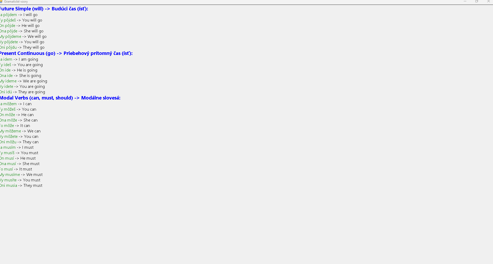
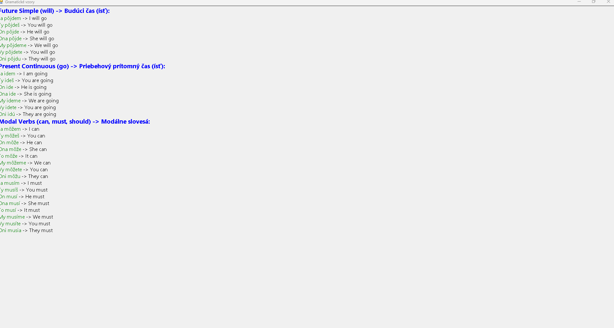
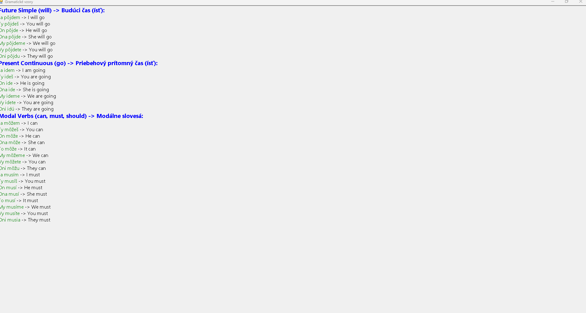

Ukážky z programu

 



Interaktívne učenie s okamžitou spätnou väzbou a analýzou vášho progresu.
Viac informácií

Program a ďalšie súbory si môžete stiahnuť priamo tu:
üí° D√¥le≈æit√©: Ak pou≈æ√≠vate setup.exe, uistite sa, ≈æe ste si stiahli aj s√∫bor Anglicka-Gramatika.msi, preto≈æe setup.exe vy≈æaduje tento in≈°talaƒçn√Ω s√∫bor.
Program podporuje predpripravené textové súbory rozdelené podľa jazykových úrovní. Po stiahnutí ich môžete importovať v sekcii "Importovať dáta".
A Level - Elementary (A1-A2) B Level - Intermediate (B1-B2) C Level - Advanced (C1-C2) All Levels (A1-C2)Po prvom spustení bude databáza gramatických vzorov pravdepodobne prázdna. Nezabudnite importovať jeden z vyššie uvedených textových súborov pomocou tlačidla "Importovať dáta". Po importe zostane databáza uložená a posledný importovaný súbor sa načíta automaticky pri ďalšom spustení programu.
Stiahnite si inštalačný súbor z časti Na stiahnutie a postupujte podľa pokynov na obrazovke.
Ak sa vám tento projekt páči, môžete ho podporiť a pozrieť si aj môj ďalší projekt na výučbu slovíčok Vocabular.